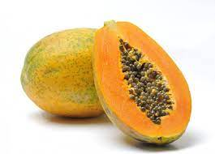

The papaya is a small, sparsely branched tree, usually with a single stem growing from 5 to 10 m (16
to 33 ft) tall, with spirally arranged leaves confined to the top of the trunk. The lower trunk is
conspicuously scarred where leaves and fruit were borne.